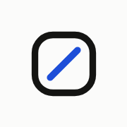
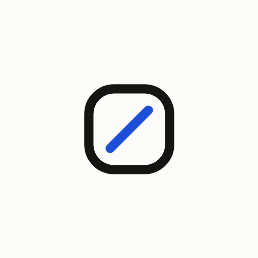
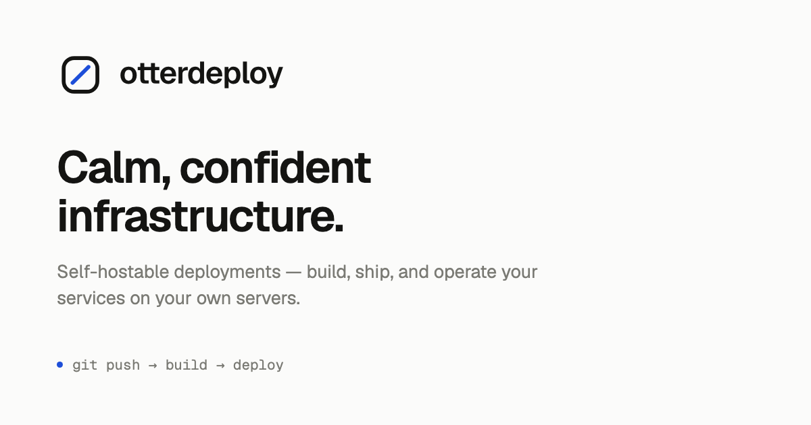
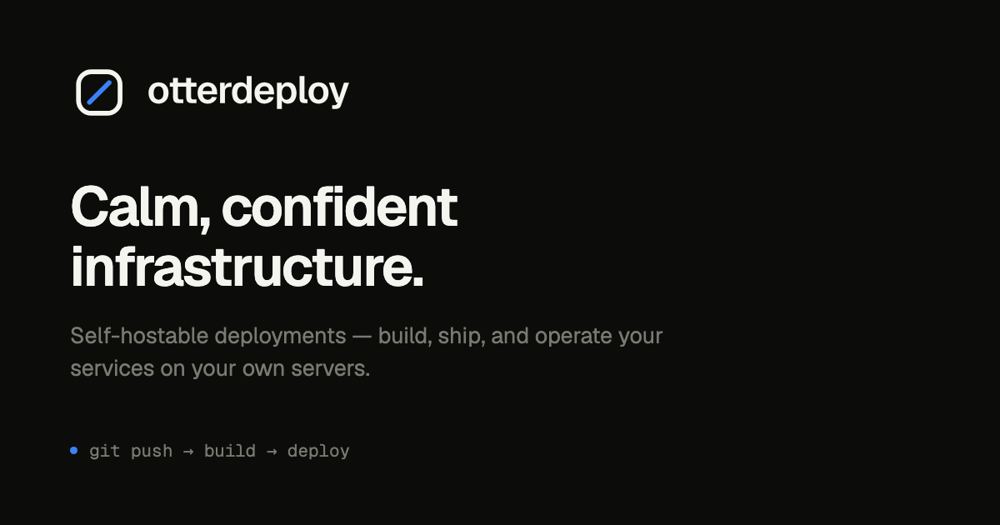

The mark is a slashed zero: the ring is the product's own
rounded-lg node silhouette, the counter is the slash DESIGN.md names as the
detail that keeps 0 and O apart. It reads as the "o" of
otterdeploy, a zero, and a node: one shape doing three jobs.
brand/scripts/build.sh
Drawn on a 32×32 grid, the same grid the favicon ships on: what you see at 16px is exactly what a browser tab renders, not a downscale of something bigger.
The ring never changes. It is the brand. The counter does, and it changes
shape, not just hue: at 16px in a tab strip, and for a colour-blind
operator, colour alone carries nothing. deploying keeps the idle slash and
sends a segment of light travelling the ring, the same vocabulary the project graph uses
for pending work; under prefers-reduced-motion that segment parks instead of
moving.
The wordmark is Geist Semibold at −0.025em, outlined to vector paths so it renders identically without the font installed. In the app it stays live text, same ratios, crisper at every zoom.
The real files, loaded straight from apps/web/public/. The small favicons are
shown at 4× nearest-neighbour so pixel-level damage is visible.




The same silhouette in box-drawing characters, printed on a bare
otterdeploy or a top-level --help. Suppressed for
NO_COLOR and when stdout is not a TTY, so nothing piped grows escape codes.
$ otterdeploy ╭──────╮ │ ╱ │ otterdeploy │ ╱ │ v0.1.3 ╰──────╯
Two inks and one accent, nothing else. The dark accent is the brighter cut because
--primary's dark value only reaches 2.1:1 on the dark canvas: fine behind
white button text, unreadable as a standalone mark.
| Role | Light | Dark | Contrast on canvas |
|---|---|---|---|
| Ring / wordmark | #141412 | #f5f5f0 | 18.6:1 · 17.4:1 AAA |
| Slash (Signal Blue) | #1d4ed8 | #3b82f6 | 7.3:1 · 5.8:1 AA |
| Canvas | #fbfbfa | #0c0c0b | – |
<OtterdeployMark /> and
<OtterdeployLogo /> in the app: they track theme tokens
automatically.
currentColor so the mark inherits its surface.brand/scripts/build.sh after any geometry change.
/,
never a \.
brand/logo/ or apps/web/public/:
both are build output.